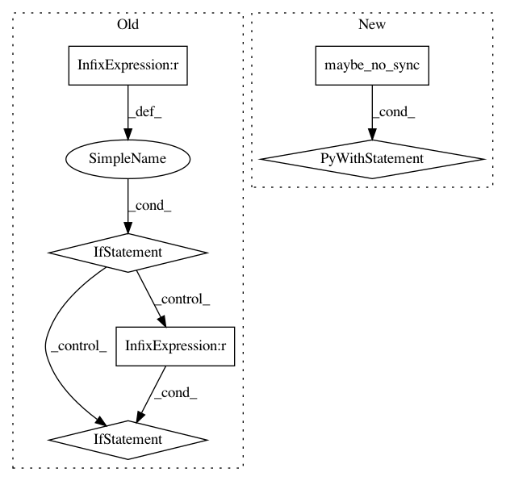

31bf9a3cbbf0739beb745389ee64f6b9200f6d53,pytext/trainers/trainer.py,TaskTrainer,run_step,#TaskTrainer#Any#Any#Any#Any#,479
Before Change
model = state.model
self.zero_grads(state)
for i, (batch_id, (raw_batch, batch)) in enumerate(samples):
if cuda.DISTRIBUTED_WORLD_SIZE > 1:
// Whenever *samples* contains more than one mini-batch, we
// want to accumulate gradients locally and only call
// all-reduce in the last backwards pass.
if i < sample_size - 1:
// sync gradients in the last sample backward
model.accumulate_gradients(True)
else:
model.accumulate_gradients(False)
with timing.time("model.train_batch"):
loss, metric_data = model.train_batch(model, batch, state)
if sample_size > 1:
// gradients averaged per each batch and accumulated across samples.
After Change
model = state.model
self.zero_grads(state)
for idx, (batch_id, (raw_batch, batch)) in enumerate(samples):
with maybe_no_sync(model, idx, sample_size):
with timing.time("model.train_batch"):
loss, metric_data = model.train_batch(model, batch, state)
if sample_size > 1:
// gradients averaged per batch and accumulated across samples.
// divide sample_size to let gradients averaged per example
loss = loss / sample_size
self.backprop(state, loss)
if report_metric:
with timing.time("add metrics"):
metric_reporter.add_batch_stats(
batch_id,
In pattern: SUPERPATTERN
Frequency: 4
Non-data size: 6
Instances
Project Name: facebookresearch/pytext
Commit Name: 31bf9a3cbbf0739beb745389ee64f6b9200f6d53
Time: 2019-07-10
Author: chenyangyu@instagram.com
File Name: pytext/trainers/trainer.py
Class Name: TaskTrainer
Method Name: run_step
Project Name: pytorch/fairseq
Commit Name: b625d53d029afbd52a508bfcf8f7cd6d45aa0f79
Time: 2019-06-20
Author: myleott@fb.com
File Name: fairseq/trainer.py
Class Name: Trainer
Method Name: train_step
Project Name: facebookresearch/pytext
Commit Name: 31bf9a3cbbf0739beb745389ee64f6b9200f6d53
Time: 2019-07-10
Author: chenyangyu@instagram.com
File Name: pytext/trainers/trainer.py
Class Name: Trainer
Method Name: run_step